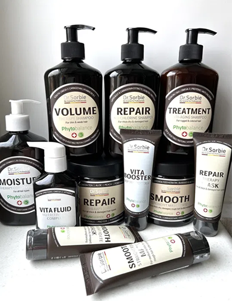
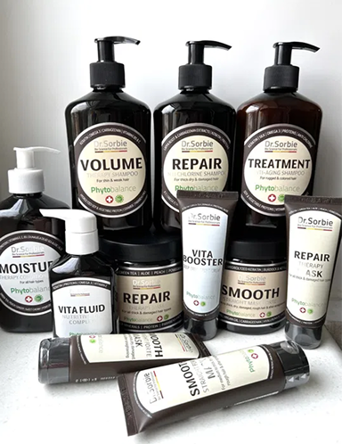

Ми використовуємо лише якісні професійні засоби.
Наші засоби забезпечують глибоке живлення, захист і відновлення. Блиск, еластичність, об’єм — результат
системного та свідомого підходу.
Продукти Braé – бразильський бренд косметики для волосся,
спеціалізується на відновленні волосся. Використовує натуральні інгредієнти та інноваційні технології.
Продукція включає широкий асортимент засобів для догляду та стайлінгу.
Dr. Sorbie — це
професійний преміальний трихологічний бренд, який поєднує амінокислоти, об’єктивний догляд
та
натуральні екстракти — без SLS, парабенів, мінеральних олій. Заснований із фокусом на здоров’я шкіри
голови та відновлення волосся на клітинному рівні, бренд активно використовується в салонах краси
преміум-класу.